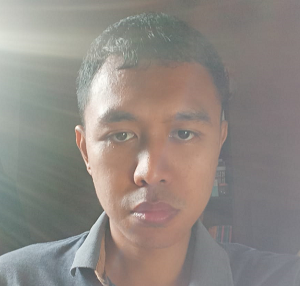

<!DOCTYPE html>
<html>
    <title>BIOGRAPHY</title>
</html>
<header>
    CSS Learning ZettaCamp
</header>
<hr>
<head>
    <link rel="stylesheet" href="externalstyle.css">
</head>
<body>
    
    <h2>Self Biography</h2>

    <table>
        <tr>
            <td>Name</td>
            <td>:</td>
            <td>Jana Kesawa</td>
        </tr>
        <tr>
            <td>Age</td>
            <td>:</td>
            <td>32 years old</td>
        </tr>
    </table>

    <p>
        Hi, I am <span id="big">Jana Kesawa</span>, an old man participating in ZettaCamp in hopes of trying to be a better person. I entered <span>ZettaCamp in Quality Assurance (QA)</span>. It is a pleasure to meet and know you.
    </p>
    <p>
        I am a graduate of <span id="big">Institut Teknologi Sepuluh Nopember</span> in Surabaya, from what once was <span>Mathematics and Science Faculty</span>, majoring in <span>chemistry</span>. I myself am a Balinese, and I live in city of Denpasar, which is about 1 hour away of relaxed motorbike ride from ZettaHouse Bali accounting the traffic.
    </p>
    <p>
        Despite being old, I still immerse myself in gaming. I am a fan of <span id="big">Yu-Gi-Oh!</span> and currently getting that fix through <span>Yu-Gi-Oh! Master Duel</span> game. Other hobbies of mine include <span>reading novels</span>.
    </p>
</body>
<hr>
<footer>
    CSS Learning ZettaCamp
</footer>